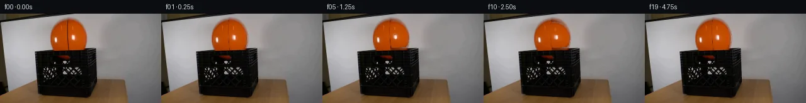

![首帧]()

Round 00
2026-11-04T23:36:25.861260+00:00像素候选变化代码 +443/−0inspection 更新
pixels f3bba77cca6627b1 · code 58a6cfb68259c7fa
查看本轮 generate.py 真实 diff
--- previous/generate.py
+++ current/generate.py
@@ -0,0 +1,443 @@
+#!/usr/bin/env python3
+"""PixelWorld-Text: Basketball released over black plastic crate.
+Generates 20 RGB frames (256×144) showing the orange inflatable basketball
+being released from a hand, falling onto a black plastic crate, bouncing,
+and settling.
+
+Method:
+- Extract the basketball as a masked RGBA sprite via color thresholding
+- Inpaint the background behind the ball using edge interpolation
+- Animate with analytic 1D physics (gravity, bounce, squash/stretch)
+- Composite ball sprite onto clean background per frame
+"""
+
+from pathlib import Path
+import numpy as np
+from PIL import Image
+from artifact_io import save
+
+CASE_DIR = Path("/mnt/bn/embodied-lf3/masiyuan/physics_iq_pixel_r2_full4fps/cleanroom_runs/deepseek-v4-pro/full_matrix_v1/text/case_0015_attempt_01/workspace")
+H, W = 144, 256
+N_FRAMES = 20
+FPS = 4
+DT = 1.0 / FPS # 0.25s
+
+
+def load_first_frame():
+ img = Image.open(CASE_DIR / "first_frame.png")
+ arr = np.array(img).astype(np.uint8)
+ assert arr.shape == (H, W, 3), f"Expected (144,256,3), got {arr.shape}"
+ return arr
+
+
+def compute_ball_mask_and_sprite(frame0):
+ """Extract ball pixels and create RGBA sprite."""
+ f = frame0.astype(np.float64)
+ r, g, b = f[:, :, 0], f[:, :, 1], f[:, :, 2]
+
+ # Ball is orange: R dominates G and B significantly
+ # Core ball condition: R high, G moderate, B low
+ is_orange = (r > 140) & (g > 30) & (b < r * 0.7) & ((r - g) > 20) & (r > b * 2.5)
+
+ # Also include ball edge pixels (darker orange blending into background)
+ is_edge = (r > 120) & (r < 190) & (g > 50) & (g < 150) & (b < 80) & ((r - g) > 10) & ((g - b) > 20)
+
+ # Include specular highlight on ball (bright white-ish)
+ is_highlight = (r > 230) & (g > 210) & (b > 200)
+ # Check if highlight is near orange ball pixels
+ from scipy.ndimage import binary_dilation
+ highlight_near_ball = is_highlight.copy()
+
+ mask = is_orange | is_edge
+
+ # Add highlights that are near the ball
+ dilated_mask = binary_dilation(mask, iterations=3)
+ mask = mask | (is_highlight & dilated_mask)
+
+ # Clean up: remove small isolated regions
+ from scipy.ndimage import label
+ labeled, n_features = label(mask)
+ if n_features > 0:
+ sizes = np.bincount(labeled.ravel())[1:]
+ largest = np.argmax(sizes) + 1
+ mask = labeled == largest
+
+ # Find bounding box
+ ys, xs = np.where(mask)
+ if len(ys) == 0:
+ raise RuntimeError("No ball pixels found")
+
+ y_min, y_max = ys.min(), ys.max()
+ x_min, x_max = xs.min(), xs.max()
+
+ # Create sprite (RGBA)
+ ball_h = y_max - y_min + 1
+ ball_w = x_max - x_min + 1
+ sprite = np.zeros((ball_h, ball_w, 4), dtype=np.uint8)
+ sprite[:, :, :3] = frame0[y_min:y_max+1, x_min:x_max+1]
+ sprite[:, :, 3] = (mask[y_min:y_max+1, x_min:x_max+1] * 255).astype(np.uint8)
+
+ # Also create a refined alpha (feathered edges)
+ # Compute distance from mask boundary for soft alpha
+ from scipy.ndimage import distance_transform_edt
+ dist_in = distance_transform_edt(mask.astype(np.float64))
+ dist_out = distance_transform_edt((~mask).astype(np.float64))
+
+ # Signed distance: positive inside, negative outside
+ signed_dist = dist_in - dist_out
… diff truncated; 356 more lines …